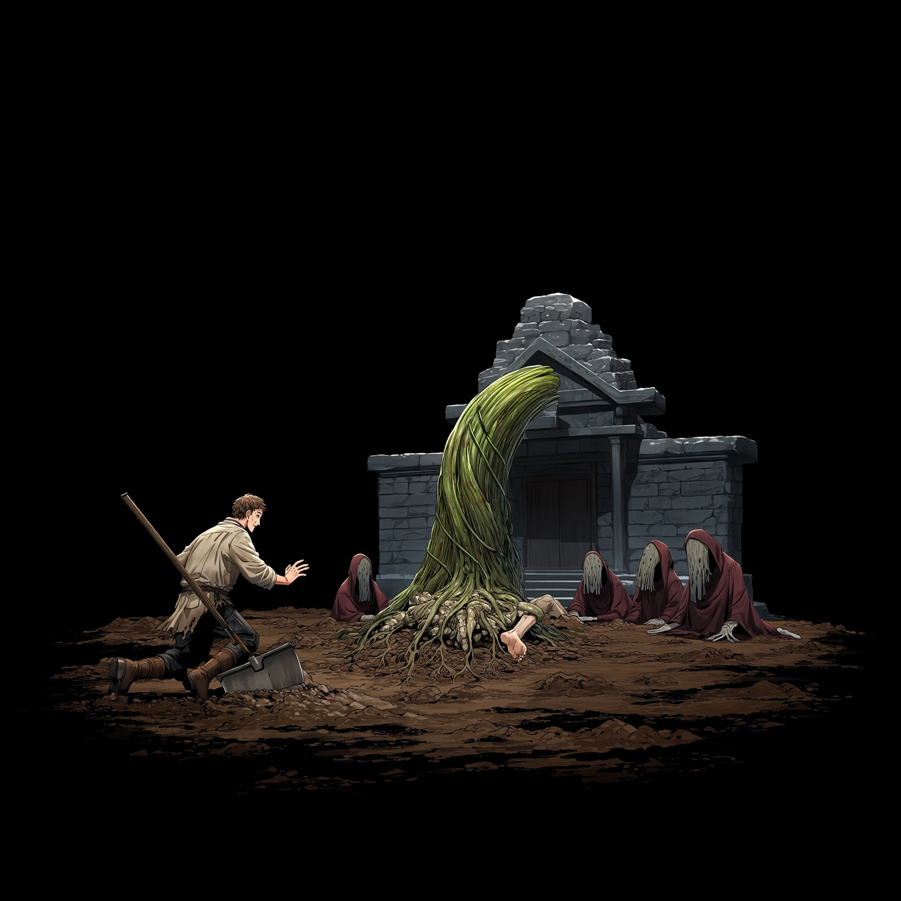
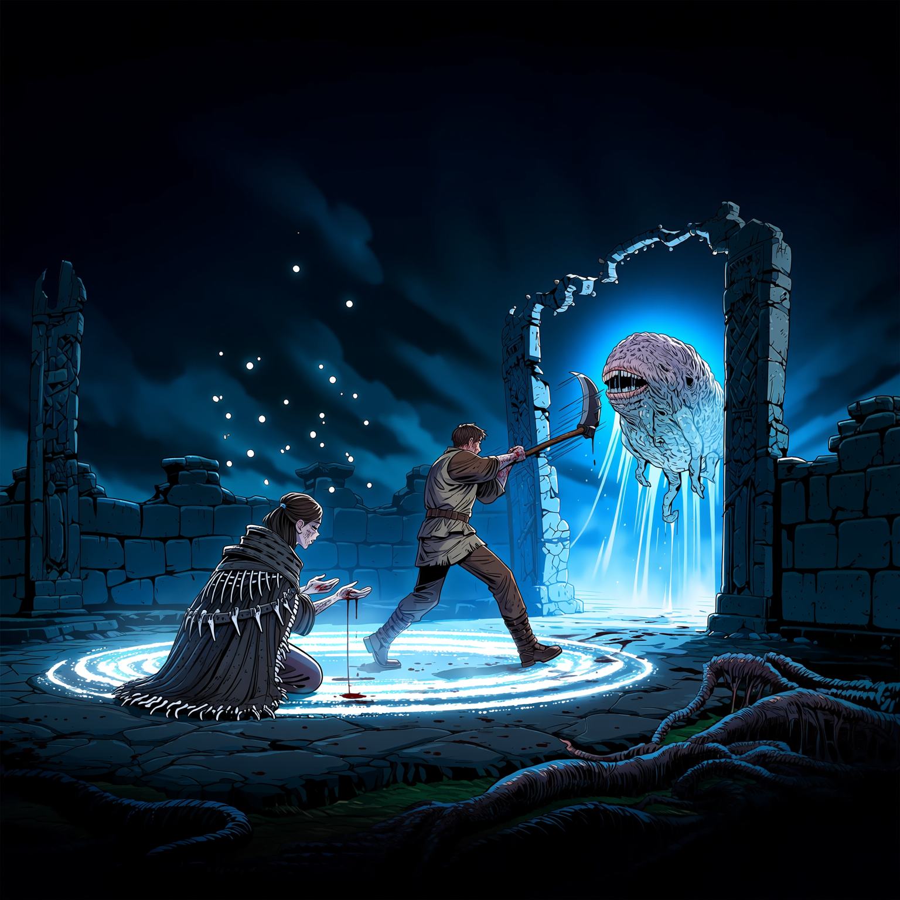
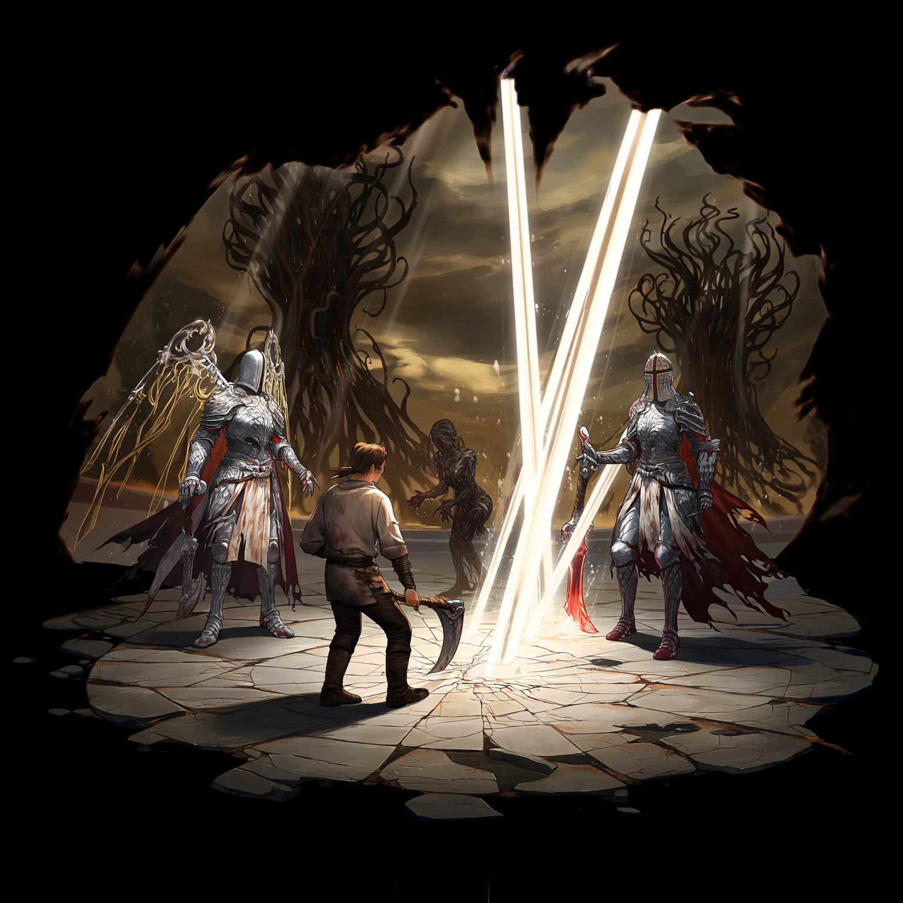
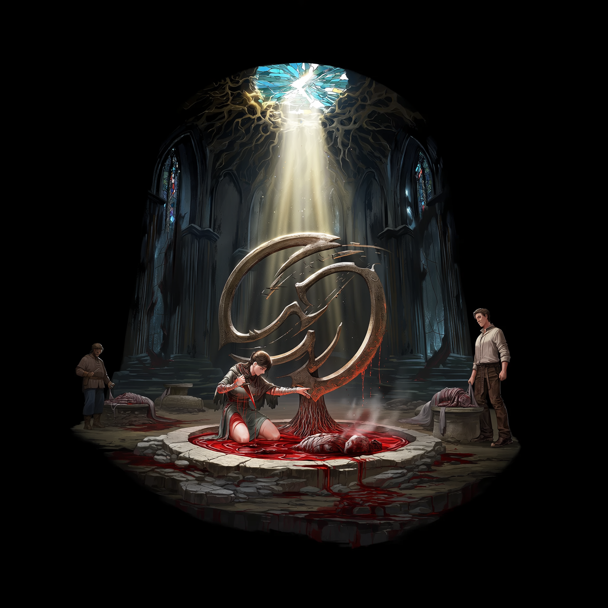
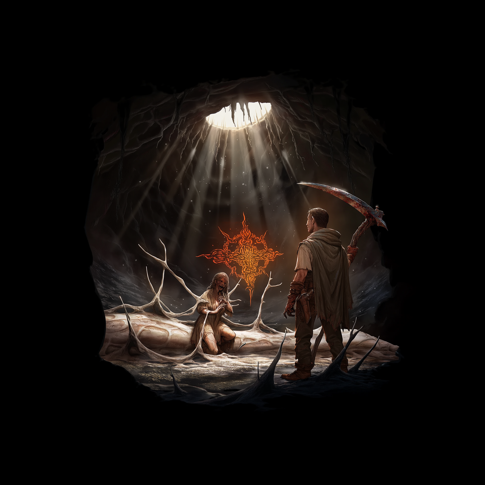
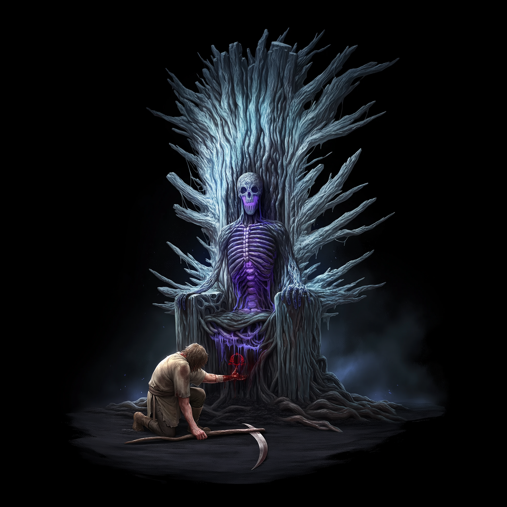

The earth did not yield; it wept. Sylas Thorne drove the rusted iron plow through the cracked loam, the blade groaning against stone and desiccated root. Where the metal tore, black sap bled from the fissures, thick as congealed blood and reeking of iron, spoiled grain, and something older—something that tasted of buried tombs and forgotten oaths. Above, the sky hung bruised and motionless, a canopy of slate and ash that choked the sun into a pale, sickly coin. A flock of crows had circled the valley since dawn, but now they fell silent, perched on dead fence posts like polished obsidian, watching the fallow grave with hollow, unblinking eyes. Famine had gnawed the kingdom of Aethelgard to its ribs. The royal granaries stood hollow, the king’s edicts meaningless parchment fluttering from shattered balconies, and the soil—once blessed by the old wardens, tended by generations of calloused hands—had turned to dust and memory. Sylas wiped sweat from his brow, leaving a smear of dark grit across his weathered face. His shoulders ached with the weight of an empty scythe slung across his back, his boots crusted with the powder of dead harvests. He was no longer a keeper of the green cycles. The title of soil-warden had rotted on his tongue years ago, shed like a winter coat when the blight first took the eastern marches and the king’s tax-collectors starved alongside the peasants. Now he was a scavenger of the barren, dragging a blade through a field that refused to sleep, refusing to wake. The plow’s wheel caught on something hard. Not stone. Sylas dropped to his knees, brushing away the topsoil to reveal a network of petrified roots, twisted into the shape of a grasping hand, knuckles fused to the bedrock as if frozen mid-prayer. They led inward, toward the treeline where the old agrarian shrine had collapsed decades past, swallowed by time and neglect. He followed the trail, boots crunching over brittle stems and calcified leaves, the silence pressing against his ears like packed snow. The shrine’s remaining pillars stood like broken teeth, draped in grey lichen and woven with dead vines that curled like sleeping serpents. Beneath a fractured slab of masonry, the earth pulsed. Sylas heaved the stone aside, breath catching in his throat, lungs burning with the dust of ages. It lay half-buried, vast and lumpy, its surface a topography of fossilized ridges that bore the uncanny impression of weeping faces, eyes hollowed by centuries of subterranean pressure. It was a tuber, but not of any cultivated strain. It breathed. A low, tectonic hum vibrated through the soil, resonating in Sylas’s marrow, making his teeth ache and his vision swim. The air grew heavy, charged with a dark, static magic that tasted of ozone, damp rot, and the metallic tang of old blood. Hair rose on his arms. The hum deepened, a subterranean heartbeat syncing with the rhythm of his own pulse, dragging him toward the edge of the excavation. He reached out, calloused fingers hovering inches from the waxy, bruised skin. The earth whispered, a sound like wind through dry stalks, pulling at the marrow in his bones, speaking of cycles and consumption, of soil that remembers every footfall, every drop of rain, every spilled life. Footsteps crushed the silence. From the shadow of the pines, figures emerged, draped in robes stained the colour of old blood and peat. Their faces were wrapped in coarse linen, eyes hollow pits reflecting the shrine’s decaying stones. They moved with the heavy, deliberate pace of men who had walked from the deep dark, their boots leaving prints that smoked faintly where they touched the ash, as if the ground itself recoiled. One stepped forward, raising a dagger forged from bleached rib-cage. The metal sang as it caught the stagnant air, edges blackened by centuries of subterranean burial, etched with runes that bled shadow into the dirt. A guttural chant rose from the circle, a language older than the kingdom’s founding, syllables carved from grinding millstones and shifting tectonic plates. *Khar-veth. Oom-ra. Tsal.* The words vibrated in the teeth, drawing power from the bedrock, from the buried dead, from the starved soil itself. The dagger struck the tuber’s crown. It pierced without resistance, sinking into the fibrous flesh with a wet, tearing sigh. Dark sap and fresh blood mingled, pooling in the crater, steaming where they touched the earth. The tuber shuddered. A fissure split its surface, widening with a sound like cracking glaciers, revealing a core of bruised violet and black. From the wound, vine-like tendrils erupted, thick as a man’s thigh, glistening with iridescent slime. They unspooled, burrowing into the ground, stitching themselves into the bedrock with necromantic precision, each root a vein, each filament a nerve. The air grew cold. The static magic coalesced into visible threads of shadow, weaving through the ash and soil, drinking the blood, drinking the breath, knitting the land into a single, terrible organism. Sylas stepped back, heart hammering against his ribs, the taste of copper flooding his mouth. The cultists fell to their knees, foreheads pressed to the dark earth, as the hum swelled into a chorus of grinding roots and sighing loam. The ground behind the shrine convulsed. Soil exploded upward, and a figure clawed its way free. It had once been a corpse buried in the famine’s early days, wrapped in rotting shroud-cloth, face long surrendered to the earth. Now, its jaw hung unhinged, lower than bone should allow, and its flesh had been replaced by a lattice of pale, fibrous tuber-matter. Sprouts burst from its hollow cheeks and wrists, twisting like newborn worms, driven by a slow, hungry pulse. It lunged, moving with a jerking, earth-born momentum, claws raking the air where Sylas’s throat had been. He rolled, the rusted plow biting into the dirt, and scrambled backward, boots slipping on slick sap. The husk turned, blind eyes fixed on him, driven by a hive-rot rhythm that thrummed in time with the tuber’s song, a mindless vessel of soil and hunger. Sylas did not look back. He fled through the blighted crops, boots slipping on slick sap and shattered stalks, breath tearing at his lungs. The entity’s hum deepened behind him, fracturing into a thousand whispering voices, a chorus of soil and sinew rising to meet the sky, calling the dead, calling the land. He crashed into the treeline, branches whipping his face, roots catching his ankles like skeletal hands. When he finally glanced over his shoulder, the shrine was gone. In its place stood a pulsing maw of interwoven roots and blackened earth, breathing with the slow, terrible rhythm of an awakening sovereign. Sylas vanished into the pines, leaving only the scent of ash and the promise of harvest.



Oakhaven clung to the edge of the world like a splinter in rotting flesh. Sylas reached the timber palisade as the sun bled into the eastern hills, casting long, bruised shadows over streets paved with cracked flagstone and dried mud. The air tasted of woodsmoke and despair. Within the walls, elders stood in the town square, voices hoarse, arguing over the dry cisterns and the king’s empty edicts. They blamed the sun, the failing rains, the wrath of forgotten saints. Denial was a heavier chain than hunger. But beyond the gates, the truth waited. Sylas slipped past the watchmen, who stared with glassy eyes, and stepped into the fields that bordered the settlement. Overnight, the earth had turned to black glass. The wheat, what remained of it, had split open along brittle stalks, revealing pale, lumpy growths that clung to the soil like exposed organs. Crude pits stared upward from their surfaces, eye-like and hollow, weeping a viscous, amber sap. Panic simmered beneath the town’s wooden ribs, a quiet terror that had not yet found its voice. Sylas pressed his boot to the ground. The hum vibrated through his sole, a slow, tectonic pulse that matched the rhythm of his own blood. The blight was not merely spreading. It was learning to walk.
He found her in the apse of a ruined bone-chapel, half-swallowed by ivy and shadow. Marrow dwelled among the relics of a dead faith, her sanctuary a labyrinth of stacked vertebrae, iron-bound jars of preserved soil, and scrolls brittle as autumn leaves. She sat cross-legged on a slab of limestone, hands stained with ash and oxidized copper, eyes like cracked flint fixed on a divination plate of polished slate. When Sylas entered, the air grew cold. She did not look up. “You smell of wet grave and waking root, warden.” Her voice was dry, stripped of melody, shaped by years of speaking to the buried dead. “The Sovereign stirs.” Sylas unslung his scythe, the metal scraping against stone. “The fields are splitting. Things with hollow eyes rise from the dirt.” Marrow finally raised her gaze. Her face was a map of scars and soot, lines etched deep by wind and weeping rites. She traced a finger through the slate, drawing a spiral of black powder. “They call it a curse. The elders pray to silent gods. But the soil remembers what the sky forgets. The Root Sovereign is no mere pestilence. It is a primordial seed, older than the first plow, older than the first king’s blood-tithe. It slept beneath the kingdom’s foundations, fed by centuries of sacrificial ash, of buried rites, of earth given to death and never returned. You broke the seal when your blade bit its flesh.” She leaned forward, the scent of damp loam and crushed myrrh rolling off her skin. “Dark magic is not a weapon. It is a ledger. Every chant, every binding, every spark drawn from the grave demands payment. The earth lends vitality, but it collects with interest. To wield the dark is to bind your pulse to the cycle of decay. You will feel it in your veins, in your breath, in the slow leaching of your warmth. Most break before the first moon.” Sylas met her gaze. “Then we break together, or we rot apart.” A faint, grim smile touched her lips. “Wise words from a man who has forgotten how to pray. Come. The soil calls its children home.”
Night fell like a hammer. The hum beneath Oakhaven thickened into a grinding rhythm, a chorus of shifting stone and tearing fiber. The fields beyond the palisade began to move. First, a tremor. Then, a pale shape crested the ridge. It rolled forward, lumpy and misshapen, its surface a network of fibrous veins and sprouting nodes. Behind it came another, then a dozen, then a hundred. Mindless swarms of tuber-kin poured over the blackened earth, slithering and tumbling with a slow, inevitable momentum. Their forms were hollowed at the crown, maws gaping with rows of fibrous, root-like teeth that dripped amber sap. Limbs of twisted vine and calcified soil dragged behind them, scraping the stone, driven by a hive-rot pulse that thrummed in time with the sovereign’s waking song. They did not hunt with intelligence. They consumed with hunger. A stray hound bolted into their path. Three husks closed in, crushing the beast beneath their weight, sprouts bursting through fur and bone, drawing the warmth into the earth until only a patch of crystallized, glass-like soil remained. Panic finally broke Oakhaven’s silence. Screams echoed from the square as timber gates groaned under the pressure of rolling flesh and grinding root. Sylas and Marrow stood atop the chapel steps, the wind whipping Marrow’s bone-strung cloak. “Draw the line,” she commanded, voice cutting through the rising din. She upended a jar of iron-rich ash, sweeping her arm in a wide arc across the flagstone. Sylas followed, dragging the flat of his scythe through the dust, carving a perfect circle around the apse entrance. Marrow knelt, pressing her palms to the ground. Her lips moved, syllables guttural and ancient, drawn from the grinding of millstones and the sigh of collapsing tombs. *Khar-veth. Oom-ra. Tsal.* The ash-line flared white. The bone-circle hummed, vibrating in Sylas’s teeth. Marrow pricked her thumb with a rusted needle, letting three drops of blood fall into the center of the ward. The liquid hissed, sinking into the stone, binding the ritual to the earth’s deep veins. The swarm hit the barrier. The first husk struck the ash-line with a wet, grinding impact. Fibrous limbs writhed, sprouts lashing like whips, but the necromantic ward held. A shockwave of cold energy rippled outward, biting into Sylas’s chest, freezing the air in his lungs. He gasped, feeling vitality drain from his limbs, siphoned into the earth to fuel the spell. Marrow rose, hands weaving through the air, drawing threads of shadow and soil from the ground. She flung them forward, and the husks froze, roots stitching themselves to the stone, maws gaping in silent hunger. Sylas stepped into the circle’s edge, scythe raised. A husk breached the line, rolling forward, maw splitting to reveal a cavity of writhing tendrils. He swung. The blade bit deep, severing fibrous muscle and calcified root. Black sap sprayed, sizzling where it touched the ash. The husk twitched, then collapsed, sprouting rapidly as the earth claimed it back. The swarm pressed harder, a tide of pale flesh and grinding root. Marrow’s chants grew louder, veins standing out in her neck like raised cords. Sylas fought with desperate rhythm, each strike draining him, each parry freezing his fingers. Yet the ward held. Dawn bled pale grey over the hills. The grinding slowed. The husks withdrew, melting back into the blackened fields, leaving behind a trail of crystallized soil and shattered timber.
Sylas fell to one knee, breath pluming in the cold air. His veins felt like rivers of ice, his heart beating slow and heavy against his ribs. He looked at his hands. The skin had grown pale, mottled with dark veins that pulsed in time with the distant hum. Marrow stood over him, face streaked with ash and sweat, eyes gleaming with a hollow, ancient light. “You feel it,” she murmured, not as a question, but as a verdict. “The debt.” She pressed a soot-stained hand to his shoulder. “Dark magic does not gift power. It borrows life. Every ward, every binding, every spark drawn from the grave ties your pulse to the soil’s cycle. The earth will take what it is owed. Warmth. Breath. Memory. If you draw too deeply, too often, you will become another husk, another vessel for the harvest.” Sylas pushed himself upright, legs trembling, but his gaze steady. “Then we spend wisely. Until the throne falls.” Marrow’s lips parted, a sigh escaping like wind through dead stalks. “Aethelgard’s heart beats in the Hallowed Fields. The Sovereign’s root-chamber lies beneath the old king’s sanctum. If we reach it before the swarms multiply, we may sever the crown-vein. But the path is long, and the soil remembers every footfall.” She turned toward the eastern ridge, where the first light of dawn painted the sky in bruised violet. “We move at first light. Or we are moved.” Sylas nodded, sheathing his scythe. The weight of the blade felt heavier now, anchored by the cold in his blood, the whisper in his bones. He looked back at the fields. The black glass stretched to the horizon, pulsing with slow, tectonic rhythm. Then, from the distant treeline, a sound rose. Low at first. Then louder. A hundred rolling husks. A grinding tide of pale flesh and fibrous limbs, moving in unison, driven by the sovereign’s waking call. The war had begun. Sylas stepped forward, into the ash and the dark, ready to bleed for the earth that sought to swallow him whole.




The sky tore open with a sound like splitting timbers. A wound of blinding white light fractured the bruised heavens, spilling radiance that burned the eyes and scorched the air into ozone and cinder. Three figures descended on pillars of falling luminescence, their wings not feathered but forged from overlapping plates of molten glass and spun gold. Where their boots touched the flagstone, stone hissed and cracked, blooming into sterile white ash. They were terrible to behold: towering, armored in celestial mail that drank the sun, faces hidden behind visors of polished alabaster. Their voices, when they spoke, were the grind of tectonic plates, the chime of shattered bells, heavy with an absolute, unyielding doctrine.
“The World-Canker festers,” declared the foremost, a warrior whose broadsword hung heavy as a falling star, its edge humming with trapped daylight. Seraphiel. Beside him stood Cassian, clutching a tome bound in silver and starlight, its pages fluttering though the air stood still, and Lyra, whose hands glowed with a soft, healing radiance that made the eyes water. “Purgation begins. The root-sovereign shall be unmade, and the soil cleansed. All that clings to the rot shall be scoured to bedrock.”
Below, the fields answered. The black glass trembled, and the swarms rose. Hundreds of husks rolled forward, a tide of pale, fibrous flesh and sprouting maws, driven by the sovereign’s waking pulse. Seraphiel raised his blade. A wave of radiance erupted, cleaving the air like a drawn curtain of fire. The light struck the first wave of husks, boiling sap, calcifying root, reducing flesh to drifting ash. It was beautiful and merciless. But the earth remembered. From the scorched crater, the dead soil rose. Golems of packed loam and fractured bone clawed themselves upright, joints grinding with necromantic torque. Thick roots lashed out like serpents, whipping through the air, driven by dark magic that coiled in the dust like smoke.
Marrow threw her arms wide, chanting through gritted teeth. She drew threads of shadow from the ground, weaving a counter-ward. The dark magic met the divine light. Where they clashed, the air warped. The light was absolute, erasing, seeking to flatten all into sterile whiteness. The dark was cyclical, hungry, pulling energy into the soil, feeding the rot, birthing new sprouts from the ash. Sylas and Marrow were caught in the crossfire. A stray beam of radiance sheared through a timber gate, igniting the granary. The angels did not flinch. To them, wood and wheat and flesh were mere kindling for the greater purgation.
“Collateral,” Cassian murmured, his voice echoing like pages turning in a windless library. He raised a gauntleted hand, and a lattice of silver light descended, searing the thatch roofs, boiling the cisterns. “The vessel must burn to save the chalice.”
Sylas dove behind a crumbling wellhead as a pillar of divine fire razed the baker’s stall. The heat blistered his skin, smelling of singed hair and caramelized bone. He unslung his scythe, stepping into the open. A husk, half-reduced to ash but still driven by fibrous hunger, lunged. Sylas swung, cleaving it in two, but the effort cost him. His veins still burned with Marrow’s dark rite, cold and heavy. He turned, raising the blade toward the nearest angel. “Your fire feeds the soil!” he roared over the grinding din. “Your ash becomes its seed!”
Seraphiel’s blade swept down in a arc of blinding white. Sylas crossed the scythe, meeting celestial steel with rusted iron. The impact drove him to one knee, boots skidding through ash and sap. The light seared through the guard, biting into his forearm, leaving a trail of crystallized skin. Divine radiance was not merely heat; it was weight, a crushing purity that sought to unmake the mortal coil. Sylas gritted his teeth, channeling the dark magic Marrow had bound to his blood. He pressed his palm to the ground, drawing up a thread of necromantic torque. The earth answered. A root, thick and slick with black sap, erupted from the flagstone, wrapping around Seraphiel’s ankle. The warrior staggered, his light flickering as the soil drank its heat.
“Mortal soil to celestial flame,” Seraphiel intoned, voice like grinding glass. He raised his foot, and a pulse of radiance detonated. The root withered, turning to dust. Seraphiel stepped back, his alabaster visor tilting. “You wield the Cancker’s breath. Yet you stand against it. A paradox of decay.”
A necromantic root, thick as a mill-post and tipped with crystallized spores, lanced upward from the blackened earth. It moved with unnatural speed, driven by the sovereign’s waking hunger. It struck Lyra across the shoulder. The spore-shell burst. A cloud of iridescent dust settled into the crack of her armor. For a heartbeat, silence held. Then, her light flickered. A sound like cracking porcelain echoed. Her alabaster visor split. Beneath the fractured surface, her flesh had changed. Pale, fibrous tuber-matter pulsed beneath her skin, sprouting delicate, root-like veins that traced her collarbone, drinking the divine radiance, converting it into dark soil. She fell to one knee, breath ragged, one hand clutching her wounded shoulder, the other trembling toward the ground.
“The soil’s memory…” she whispered, her voice layered with the grinding hum of the earth, her words fraying into something older, something that tasted of damp loam and buried oaths. “It does not forget. It consumes. It rewrites. The light is but a season. The root endures.”
Seraphiel turned, his blade casting long, cold shadows. Fear, rigid and doctrinal, tightened his stance. Cassian’s tome snapped shut, silver bindings hissing. “The Cancker touches the Grace. The rot spreads upward. The cycle bleeds into the eternal.” He raised a gauntlet, light gathering at his fingertips, ready to purge his own sister from the fold.
“Stay her hand,” Marrow croaked, stepping from the wellhead’s shadow. Her cloak was torn, her face streaked with ash and black sap, but her eyes gleamed with the hollow, ancient light of the deep soil. “The Sovereign does not merely conquer. It assimilates. Your fire scours the surface, but the blight drinks the heat and grows deeper. You burn the wheat, yet the chaff becomes seed.”
Seraphiel locked his alabaster gaze on Sylas. “Warden. Choose. Ally with the Heavens, and we shall scorch the blight from root to crown. Or stand with the earth, and burn with it.”
Sylas wiped soot and black sap from his brow. His veins still burned with Marrow’s dark rite, cold and heavy, a ledger of borrowed life ticking in his blood. He looked at the angels, at their blinding, inflexible light, then at the fields, where the earth breathed and the husks waited. He thought of the elders’ denial, the hollow granaries, the king’s parchment edicts fluttering from shattered balconies. He thought of the soil’s slow, terrible hunger, and the celestial fire that turned it to glass.
“Your fire feeds the soil,” he said, voice rough, stripped of prayer. “Your ash becomes its seed. Strike the epicenter. Let us breach the inner sanctum. The throne-chamber lies beneath the Hallowed Fields. We will sever the crown-vein. You purify the surface. We bind the root.”
Seraphiel’s blade lowered an inch. The light around him dimmed, just a fraction, enough to let the bruised sky bleed through. “A fragile covenant. Mortal soil to celestial flame. If the warden falters, the Heavens will burn the fields to bedrock.”
“Better than a kingdom of glass,” Marrow added, her voice dry as autumn leaves. She stepped forward, pressing her soot-stained palm to the ground. The earth sighed, a low, tectonic exhalation that vibrated through stone and bone. The truce was struck, not in faith, but in necessity.
Sylas turned toward the eastern ridge, where the Hallowed Fields lay shrouded in bruised mist. The path ahead was long, anchored by the cold in his blood, the whisper in his bones. Behind him, Lyra’s hand trembled at her side. A single drop of black soil fell from her wounded shoulder, striking the flagstone. It did not dry. It pulsed. Fibrous veins spread outward, stitching themselves into the stone, drinking the residual heat of divine radiance, converting it into fertile dark. The grace bled soil. The war had found its first compromise, and the earth was already swallowing it whole.
Sylas did not look back. He walked into the ash and the mist, Marrow at his heel, the hum of the waking sovereign rising behind them like a tide. The angels’ light carved a path through the blighted crops, scorching and purging, while the dark magic coiled in the dust, waiting to drink. The Hallowed Fields lay ahead, and beneath them, the throne awaited its warden.



Time compressed into a grinding rhythm. Aethelgard did not fall; it was unspooled. From the high citadels to the river valleys, the kingdom fractured along the fault lines of the sovereign’s waking hunger. Root-tendrils, thick as siege engines and slick with iridescent sap, pried through basalt foundations, splitting towers like overripe fruit. Stone groaned and splintered as necromantic torque twisted mortar into pulp, archways bowing beneath the weight of subterranean pressure. Below, the valleys flooded with rolling husks. Thousands of them. A pale, fibrous tide that swallowed cobblestone roads, shattered bridges, and fleeing caravans. Survivors scrambled up limestone cliffs, boots slipping on wet shale, only to watch as their comrades were dragged down, crushed beneath grinding root-flesh, their screams swallowed by the hive-rot pulse. Those left behind did not die. They were assimilated. Skin thickened into waxy tuber-matter, eyes hollowed into sprouting pits, limbs calcifying into vine and soil. The sky bruised further, choked with ash and spore-clouds that drifted like slow snow. Famine had birthed a new kind of abundance: a fertile, mindless conquest that demanded no tribute, only surrender to the earth.
Sylas and Marrow descended into the sunken crypts of the Grand Cathedral, now a pulsing necromantic hub. The nave’s stained glass had shattered, replaced by a canopy of interwoven roots that dripped black sap onto altars of calcified bone and fractured marble. Cultists moved in silent processions, dragging corpses from the surface on sleds of rusted iron. They fed the fallen to a central monolith—a Mother Tuber, vast and veined, its surface scarred with fossilized faces and weeping fissures that exhaled damp, copper-rich air. With every corpse consumed, the entity shuddered. New networks of fibrous roots erupted from its crown, stitching themselves into the cathedral’s bedrock with tectonic precision. The hum was deafening here, a subterranean chord that vibrated in the teeth and made the marrow ache. Marrow stepped onto the central dais, her cloak heavy with ash and dried sap, boots leaving prints that smoked faintly in the cold air. “The crown-vein thrums here,” she murmured, voice stripped of its earthly cadence, shaped by years of speaking to the buried dead. “The swarm draws from this heart. We must bind the tide.”
She unrolled a scroll of cured hide, inscribed with necromantic sigils that drank the dim light. Kneeling, she pressed her palms to the cold stone. Her lips parted, and the chant began. Not a prayer. A ledger. *Oom-ra. Tsal. Khar-veth.* The words drew power from the buried dead, from the starved soil, from the cold account of her own veins. She wove bone-dust and iron-rich ash into a binding circle, driving a rusted dagger into her own wrist. Blood fed the rite, hissing as it met the stone, sinking into the earth’s deep veins. The air grew heavy, charged with ozone and the metallic tang of old graves. Marrow’s hands moved through the air, drawing threads of shadow and soil from the ground. She flung them outward, and the necromantic torque rippled through the crypt. The cultists froze. Above, through the shattered nave, the rolling tide of husks slowed, then halted. The Mother Tuber’s hum stuttered, its fibrous veins constricting as the binding took hold. But the ritual demanded payment. Marrow’s breath plumed in the cold air, turning to frost. Her skin paled, mottling with dark, subterranean veins that pulsed in time with the sovereign’s waking rhythm. Vitality bled from her limbs, siphoned into the stone, into the roots, into the earth’s endless ledger. She gasped, fingers clawing at the dais, nails scoring marble, as the dark magic anchored itself to her flesh. The swarm held. The tide receded. But the cost was etched into her bones.
When Marrow rose, her eyes were no longer flint. They were dark soil, shifting and deep, reflecting the grooves of ancient harvests and the slow grind of tectonic plates. Her voice split, layered with a second timbre—the grinding hum of the sovereign, the sigh of collapsing tombs, the whisper of a million buried seeds. “You sought to halt the tide,” she said, her own voice fraying into the earth’s chorus, syllables tasting of damp loam and buried oaths. “Yet the soil does not flow in one direction. It cycles.” She stepped forward, boots leaving prints that smoked with necromantic frost. “The Sovereign is not merely conquering. It is weaving. Centuries of famine, of sacrificial ash, of kings bleeding their peasants into the dirt, of wardens praying to silent skies… it remembers. It drinks the decay and births stasis. A world without famine. Without rot. Without the slow, grinding death of the seasons. Only the harvest. Eternal. Fertile. Still.” She turned her soil-dark gaze to Sylas, head tilting with an avian, earth-born grace. “We fight a cycle, warden. Light burns, soil drinks, roots rise. The Sovereign does not hunger for flesh. It hungers for balance. For a ledger finally paid.”
Sylas felt the cold in his veins deepen, a heavy, anchoring weight that matched the rhythm of the crypt. The necromantic rite had not just bound the swarm. It had tethered Marrow’s soul to the blight. Her humanity fractured, replaced by a pragmatic, earth-born clarity. She was no longer merely a guide. She was a conduit. A bridge between the waking sovereign and the dying kingdom, her pulse synced to the slow, terrible rhythm of the soil.
Above, the celestial light struck. Seraphiel’s purge descended upon the cathedral spire, a column of blinding radiance that seared stone and root alike. The heat was absolute, flattening, turning timber to cinder and flesh to ash. But the charred soil did not lie fallow. It steamed. The ash rained into the fissures, feeding the Mother Tuber. The sovereign drank the divine heat, converting it into necromantic torque, sprouting thicker, faster, more numerous. The blight accelerated. Sylas watched a husk absorb a stray beam of light, its fibrous flesh crystallizing into armor, its maw splitting wider, driven by a hunger that had learned to feast on purity. The war was not a line. It was a wheel. Light fed dark. Dark birthed light’s ash. Ash fed the root. He realized, with a cold certainty that settled in his chest like packed snow, that the heavens and the harvest were locked in a perpetual exchange, grinding the kingdom to dust between them. The angels scoured the surface. The sovereign drank the fire. The cycle turned, indifferent to crowns or cathedrals.
Marrow turned toward the eastern horizon, where the Hallowed Fields lay shrouded in bruised mist and drifting spore-clouds. Her soil-dark eyes gleamed with ancient hunger, reflecting the slow grind of a thousand unharvested seasons. “The purge accelerates the rot,” she murmured, her dual voice harmonizing with the crypt’s deep hum. “Heaven and earth dance the same old waltz. But the throne remains unclaimed.” She pointed a calloused, ash-stained finger toward the distant ridge, where the land dipped into a valley of pale, glass-like soil. “The sovereign’s crown-vein ends beneath the old sanctum. The throne awaits its warden. Step into the heart, Sylas. Before the soil claims us all.” The hum deepened, a tectonic chord that vibrated through bone and bedrock, pulling at the marrow in his limbs. The conquest was not ending. It was accelerating. And the throne called its name.




The Hallowed Fields lay open beneath a sky torn asunder. Seraphiel’s host descended like falling meteors, wings of molten glass and spun gold carving gashes through the bruised atmosphere. Their war-chant shook the earth, a harmonic resonance that fractured limestone and boiled the dew into steam. *Lux aeterna. Ignis purus. Terra cadet.* The words fell like iron hammers, each syllable a decree of annihilation, heavy with the weight of celestial doctrine. The Root Sovereign answered. The soil did not merely tremble; it exhaled. From the glassy fissures and blackened loam, legions rose. Armored husks, their fibrous flesh reinforced with calcified soil and petrified root, marched in silent unison, driven by the hive-rot pulse that thrummed beneath the valley floor. Necromantic abominations—masses of woven sinew, shattered bone, and sprouting nodes—clawed upward, joints grinding with tectonic torque, maws dripping amber sap that hissed where it struck stone. The air grew thick with ozone, damp rot, and the metallic tang of awakening soil. Sylas stood on the ridge, Marrow at his flank, watching the collision approach. The angels formed a wedge of blinding radiance, blades raised, shields drinking the sun. The blight-kin advanced, a pale tide of grinding flesh and fibrous limbs, hungry for the light that sought to unmake them. The first clash rang out like a bell struck in a tomb.
Light and soil met. Seraphiel’s vanguard struck the front line, cleaving through armored husks with strokes that parted the air. Where celestial steel bit, sap boiled, root calcified, flesh turned to drifting ash. But the Sovereign drank the heat. Husks that should have shattered instead absorbed the radiance, their fibrous cavities glowing violet as divine energy fed the necromantic torque. Crystalline armor sprouted along their carapaces, refracting the light into prismatic blades that sliced through timber and iron alike. The swarm adapted. They surged forward, not with mind, but with hunger. A root-spear, thick as a siege pole and tipped with a node of crystallized spore, lanced upward from the churning earth. It pierced Seraphiel’s breastplate, punching through celestial mail and divine flesh. The warrior staggered, his light flickering as black soil bled from the wound, hissing where it met the holy armor. His grace was bleeding dark. Cassian’s scrolls erupted into white flame, the starlight bindings snapping as a wave of necromantic spores consumed the air. He fell to one knee, tome reduced to ash, voice choked by the grinding hum of the earth. Lyra moved through the fray, a wound between grace and rot. Her blade struck true, cleaving husks with radiant force, but with every swing, fibrous veins crept higher up her arms, drinking the light, converting it into fertile dark. She fought not for heaven, but for the soil’s memory, her steps heavy with the weight of two warring cycles. Sylas waded into the crossfire, scythe a blur of rusted iron and necromantic frost. He parried a celestial strike, the impact driving him backward, boots slipping on slick sap and crushed stone. Marrow chanted behind him, drawing threads of shadow from the ground, weaving a temporary ward against a falling pillar of light. The exchange was brutal, indifferent. Angels scorched. Husks consumed. The valley floor became a churned mosaic of ash, black soil, and crystallized root, grinding beneath the weight of a war that refused to end.
Beneath the chaos, Sylas and Marrow breached the central chamber. The air here was cold, thick with the scent of damp loam and oxidized iron. The Mother Tuber had swollen into a monolithic form, its surface a tapestry of fossilized faces and weeping fissures that exhaled spore-laden breath. At its base, the crown-vein pulsed—a thick, fibrous cord tethering the entity to the legions above, to the living dead, to the kingdom’s fractured pulse. Marrow stepped forward, boots sinking into the black soil. Her soil-dark eyes gleamed with ancient clarity. “The severance,” she murmured, voice layered with the sovereign’s hum. She unbound the rusted dagger from her belt, pricking her palm. Blood fell onto the vein. “*Khar-veth. Oom-ra. Tsal. Vael-krin.*” The chant was a blade drawn from the grave. She wove bone-dust and iron ash into a binding sigil, driving the dagger into her own chest. The necromantic torque flared, a cold wave that ripped through the chamber. The crown-vein shuddered, its pulse fracturing. The link to the legions above began to fray. But the ritual demanded more than blood. It demanded a soul. Marrow’s breath hitched. Her skin paled to the colour of winter ash, veins blackening as the dark magic anchored to her marrow. The Sovereign resisted. The vein tightened, drinking her essence, pulling her vitality into the earth’s ledger. The backfire was instantaneous. The tuber’s surface split wider, fibrous matter surging upward, weaving itself into a grim, throne-like structure of soil, bone, and crystalline root. Marrow fell to her knees, dagger lodged in her sternum, blood pooling into the fissures. She looked up at Sylas, her dual voice fraying into a single, earthy whisper. “Steer the harvest, warden.” Then her breath stilled. The soil swallowed her, roots stitching over her form until only the throne remained, humming with stolen necromancy.
Above, the angels’ light dimmed. Seraphiel dragged his root-pierced form to the chamber’s edge, blade raised, alabaster visor fixed on Sylas. “Mortal soil-worship,” he intoned, voice grinding with celestial wrath. “You fed the Cancker with your rites. You bound the rot to flesh. The ledger is yours.” Cassian rose, silver gauntlets crackling with residual starlight, eyes hollowed by ash and doctrine. Lyra stood apart, grace and rot warring in her stance, her gaze heavy with sorrow. The judgment fell. A pillar of radiance struck the chamber floor, searing stone and root alike. Sylas rolled, drawing a thread of dark magic from Marrow’s lingering sigil. The necromantic torque coiled around his arm, freezing the air, biting into his skin. He swung his scythe, meeting celestial steel with rusted iron. The impact rang through the chamber, ash and black sap spraying. Tendrils lashed from the throne, wrapping around his legs, pulling him toward the sovereign’s heart. Sylas channeled the dark, binding the roots with frost and bone-dust, buying seconds. He fought both threats: the celestial purge that sought to flatten him to ash, and the necromantic tide that sought to assimilate him into the soil. Dark magic became his shield, his breath, his only currency. He pushed forward, boots slipping on slick earth, scythe carving through fibrous limbs and falling light. The heart-chamber lay ahead, a cavern of pulsing root and weeping sap. Sylas stepped across the threshold, alone, leaving the war to the grinding cycle above.



The heart-chamber swallowed sound. Sylas stepped across the threshold, boots sinking into soil that breathed with slow, tectonic warmth. The air hung thick as broth, heavy with damp loam, oxidized iron, and the coppery tang of ancient graves. Before him, the Sovereign waited. It had risen from centuries of buried oaths and starved earth, woven into a monolithic presence that defied mortal measure. Fibrous roots arched like cathedral ribs, cradling a core of bruised violet and black, pulsing with a rhythm that matched the valley’s sleeping pulse. Waxy, lumpy flesh rippled beneath a crust of fossilized ridges, each groove bearing the uncanny impression of weeping faces, mouths parted in silent communion, eyes hollowed by subterranean pressure. The throne was not built. It was grown. A crown of soil and sinew, waiting.
Sylas approached, scythe heavy in his grip, veins burning with the cold ledger of Marrow’s rite. The static magic in the air tasted of ozone and crushed myrrh, vibrating in his teeth, pulling at the marrow in his bones. The Sovereign spoke. Not with a single voice, but with a chorus woven from the earth’s deep memory. Marrow’s dry, pragmatic cadence layered over the grinding glass of Seraphiel’s doctrine, beneath which hummed the hollow whispers of famine victims, tax-collectors, and forgotten wardens. *Khar-veth. Oom-ra. Tsal.* The syllables resonated in his chest, tasting of wet ash and dormant seed.
“You stand at the pivot,” the chorus breathed, roots shifting like slow tides. “The sky burns. The soil drinks. The cycle grinds bone to dust, dust to bread, bread to ash. Yet you fight the turning.” A vine, thick and slick with iridescent sap, unspooled from the monolith’s base, resting at Sylas’s feet like an offering. “The old harvest starved the world. The light scours it bare. We offer a new yielding. A world without the slow rot of seasons. Without the famine that hollows the rib. Without the pain of the plow. Only stasis. Only fertile darkness. A ledger finally balanced. Lay down the blade, warden. Become the soil.”
Sylas looked at the vine. He thought of Oakhaven’s splintered palisades, of elders praying to silent gods, of Lyra’s grace bleeding black soil, of Marrow’s blood sinking into stone. He thought of the king’s empty granaries, of children trading crusts for rusted nails, of the earth’s patient, terrible hunger. The Sovereign’s offer was not mercy. It was cessation. A garden frozen in perpetual bloom, where nothing died because nothing ever truly lived. A harvest without reaping. A ledger without debt.
“Stasis is not harvest,” Sylas murmured, voice rough as crushed shale. “It is a tomb dressed in green.”
He raised the scythe. Not to strike. To cut.
He drove the blade into his own palm. Blood welled, dark and rich, dripping onto the black soil. Marrow’s final rite echoed in his mind, syllables carved from bone and winter frost. *Vael-krin. Oom-ra. Tsal.* He pressed his bleeding hand to the vine. Necromantic torque flared, a cold fire that raced up his arm, seizing his shoulders, flooding his chest. The dark magic did not borrow this time. It claimed.
Sylas chanted, voice cracking with the weight of centuries. He drew threads of shadow from the ground, weaving them with his blood, with iron-rich ash, with the fractured memory of every warden who had tended this valley. He did not seek to unmake the Sovereign. He sought to steer it. To bind its hunger to rhythm, to leash its stasis to the turn of seasons, to make the soil a ledger that paid both debt and promise. His breath turned to mist. His fingers stiffened, skin mottling with dark, subterranean veins that pulsed in time with the entity’s deep hum. Vitality bled from his limbs, siphoned into the earth, but it did not vanish. It anchored.
“I take the yield,” he whispered, pressing his palm deeper into the fibrous flesh. “I bear the blight. I steer the harvest.”
The chamber shuddered. Dark magic flooded the stone, a tidal wave of necromantic torque that turned the air to frost and the walls to glass. The Sovereign’s core pulsed, violet bleeding into black, fibrous matter writhing and reforming. Waxy flesh thickened, sprouting nodes hardening into crystalline starch, calcified soil packing into dense, regalian layers. The monolith warped, rising higher, roots weaving into a grim, throne-like structure of packed loam, bone, and interlaced vine. It was no longer a mere seed. It was a crown. And Sylas’s soul tethered to it, a warden’s chain forged in blood and ash, his pulse syncing to the slow, deliberate rhythm of the soil.
Above, the war lost its fuel. The celestial light, once blinding and absolute, dimmed to a pale, bruised glow. Seraphiel stood in the shattered nave, root-pierced chest weeping black soil, blade heavy in his grip. The grinding hum of the earth had changed. It was no longer a hungry tide. It was a measured rhythm. A turning wheel. The angels’ doctrine of purgation had sought to flatten the cycle, but the soil had learned to bend. Cassian’s ash-stained gauntlets fell to his sides, silver bindings cold. Lyra lowered her blade, grace and rot harmonizing in her stance, a single drop of dark soil falling from her wrist to nourish a sprouting node.
“The ledger shifts,” Seraphiel murmured, voice stripped of celestial thunder, reduced to the quiet grind of stone. “The mortal takes the tiller. The harvest is sheared.” He fell to one knee, alabaster visor tilting toward the earth. “Balance restored. Not by fire. By soil.”
One by one, the angels turned. Wings of molten glass and spun gold folded, catching the last of the dying light. They ascended in silent columns, rising through the bruised sky, leaving the kingdom to its new warden. The blight did not recede. It stabilized. The black glass of the fields softened into rich, dark loam. The rolling husks slowed, their fibrous limbs settling into purposeful rhythm, tilling the soil, planting seeds of crystallized root and dormant spore. The necromantic fertility held. Quiet. Eternal. Unyielding.
Sylas sat upon the root-throne, back straight, hands resting on arms of calcified bone and woven vine. His veins pulsed with cold soil, his breath synced to the deep hum of the valley. Above him, the swarms moved through the fields in silent procession, dragging rusted plows, sowing ash, nurturing the dark. The angels watched from the fractured heavens, pale as winter moon, their light a distant memory. The conquest was complete. The famine was broken. The harvest would turn, season after season, unbroken by sky or sword. Sylas closed his eyes, listening to the earth breathe. The soil remembered. The soil endured. And the warden kept his ledger.


